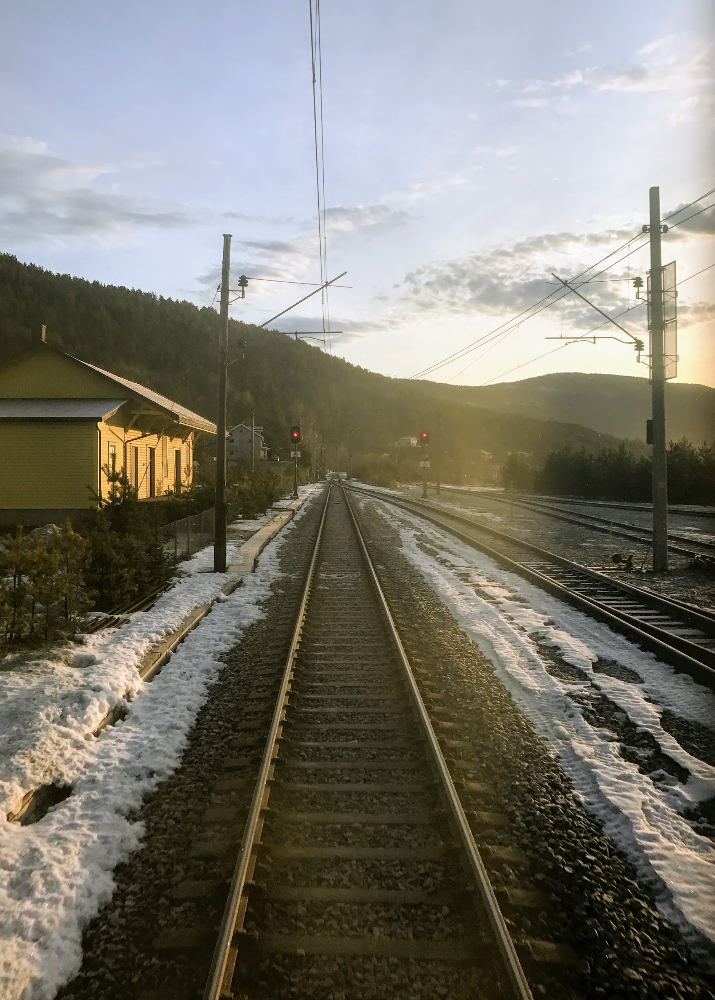
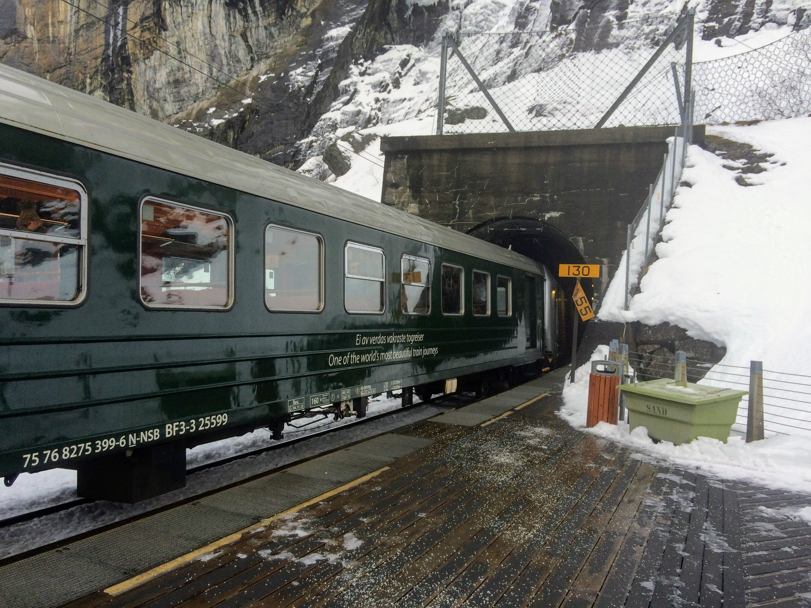
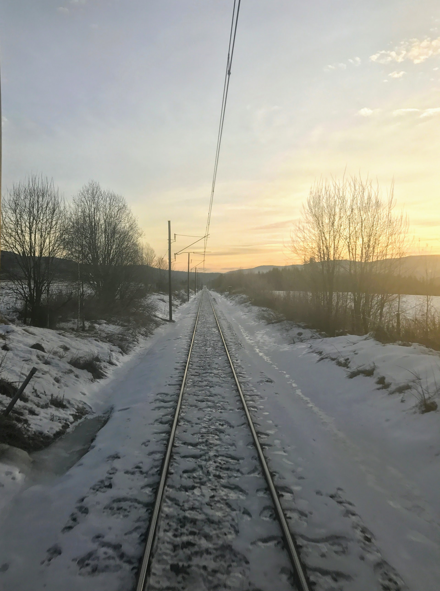
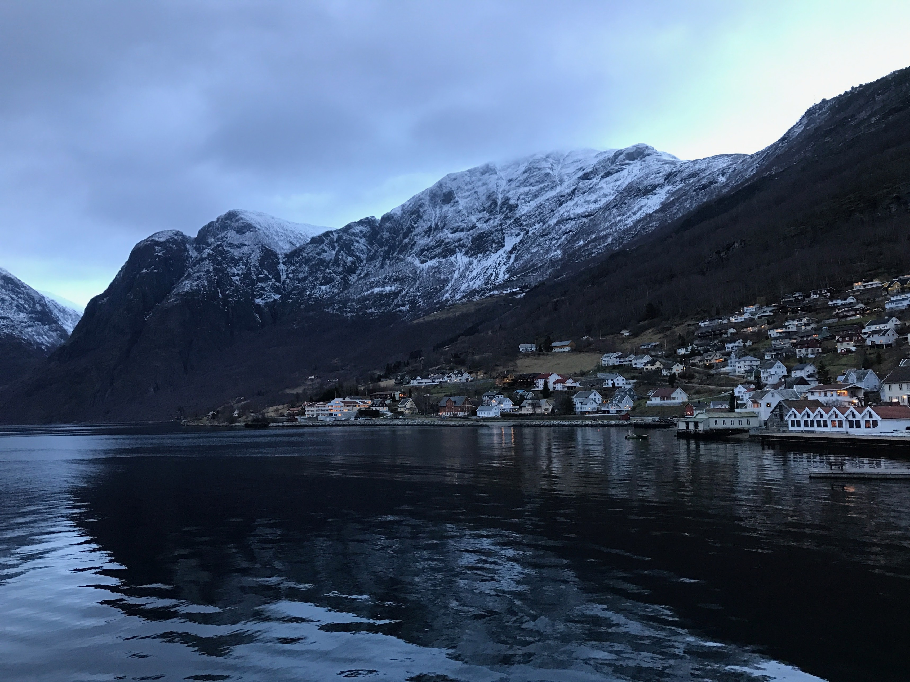
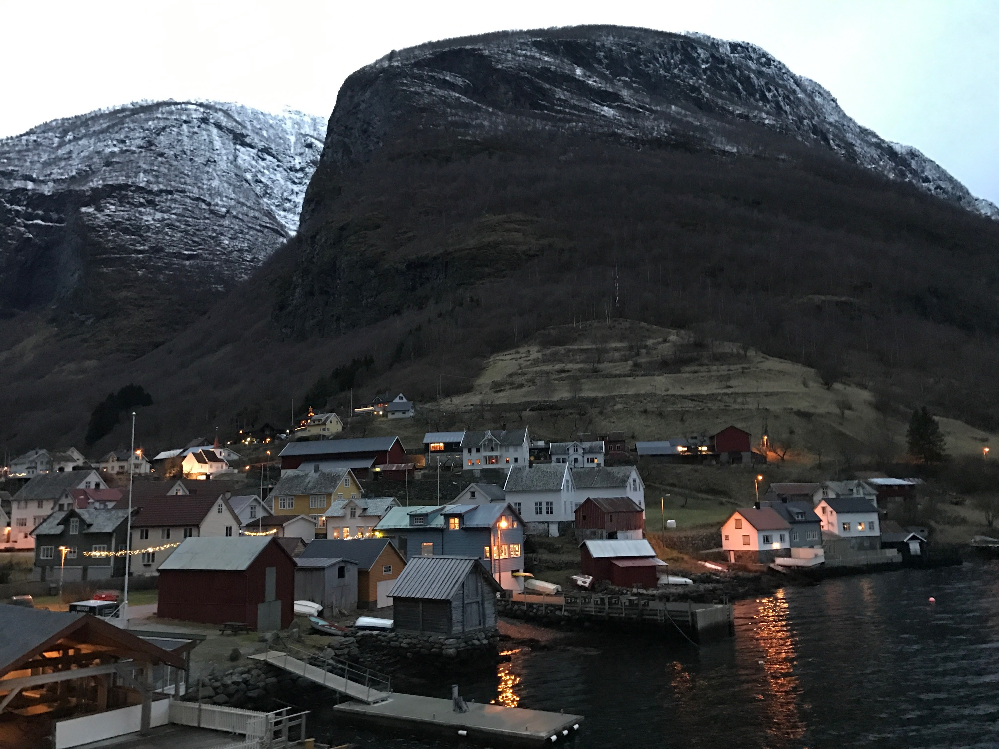

奥斯陆
奥斯陆是挪威的首都,大约有一百五十万人口，在古挪威语中，奥斯陆的意思是“上帝的山谷“，它三面被群山环绕，既有海滨城市的旖旎风光，又有依托高山密林的雄浑气势，整个城市与绿色的大自然和谐地融为一体，美不胜收。我们这次去奥斯陆只是为了去松恩峡谷以及体验挪威的雪地火车。
不过需要注意的是，奥斯陆的机场离奥斯陆市区大约有120英里，是的你没看错我也没写错，120英里。可能寒冷的北欧找块地方修机场真的不容易？总之，从机场到市区，我们先坐了火车，又转了汽车，最后又打了出租，大约花了两个半小时才到住的地方，交通十分不容易。
世界上最美的铁路
卑尔根到奥斯陆的铁路被称之为世界上最美的铁路。由于斯堪的纳维亚山脉纵贯挪威全境，全国的高原、山地、冰川大概占了 2/3 以上。这段铁路线翻山越岭，途中有 100 公里（总长约 470 公里）穿行在高山白雪严寒的荒凉之地。


网上攻略建议春天或者夏天来坐这趟火车，可以体验到从春意盎然的草地森林进入到冰天雪地的雪原。然而这次我们是冬天去的，全程只有皑皑白雪和森林，但是景色依旧很美。




松恩峡
松恩峡湾位于挪威西部松恩-菲尤拉讷郡境内，全长205公里，为挪威第一长，世界第二长的峡湾。最深处达海平面下1308米，主干平均宽度约为4.5千米。 下火车之后就可以直接上船。


根据船上语音介绍，可以在游览的时候看到海豚或者鹰，但是由于我们是冬天去的，下午坐上船的时候天色已暗，没有看到任何的动物。

冬天去天色会特别暗，而且天气很冷容易生病，所以建议还是夏天的时候去玩比较合适。。。